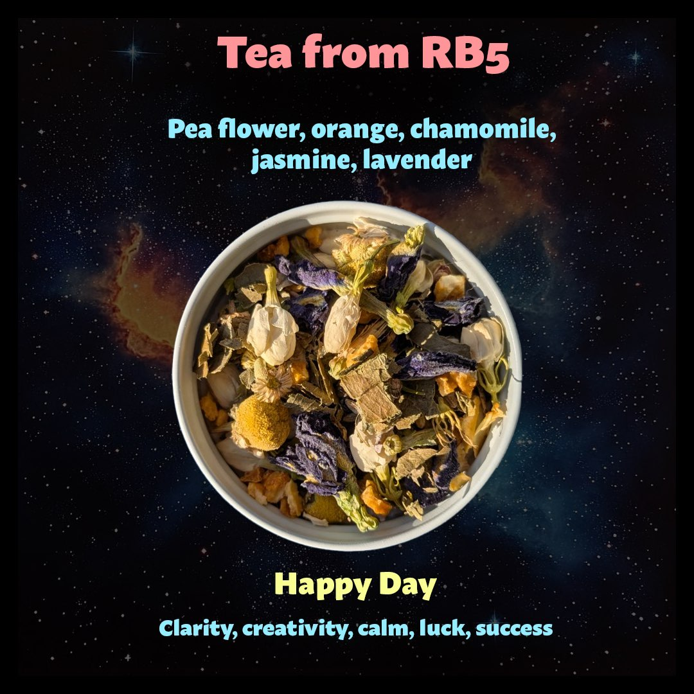
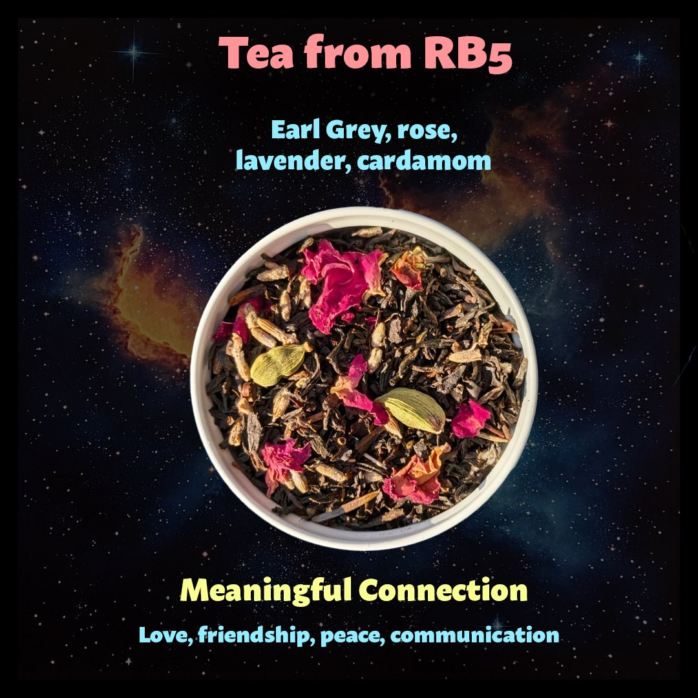
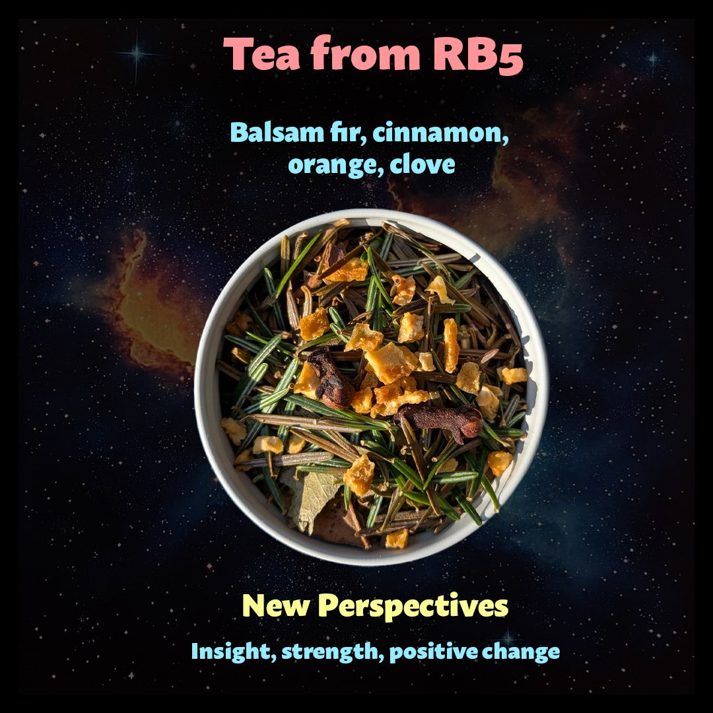

Happy Day
Clarity, creativity, calm, luck, success
Steeping Instructions
Ingredients: Pea flower, orange, chamomile, jasmine, lavender
Water Temperature: 200°F (93°C)
Steep Time: 5-7 minutes
Serving: Enjoy hot or iced. Add lemon to watch the color magically change from blue to purple!

Meaningful Connection
Love, friendship, peace, communication
Steeping Instructions
Ingredients: Earl Grey, rose, lavender, cardamom
Water Temperature: 200°F (93°C)
Steep Time: 3-5 minutes
Serving: Delicious on its own or with a touch of maple syrup or agave. Can be enjoyed with oat or almond milk.

New Perspectives
Insight, strength, positive change
Steeping Instructions
Ingredients: Balsam fir, cinnamon, orange, clove
Water Temperature: 205°F (96°C)
Steep Time: 5-7 minutes
Serving: This warming blend is excellent on cold days. Sweetens nicely with maple syrup or date syrup if desired.